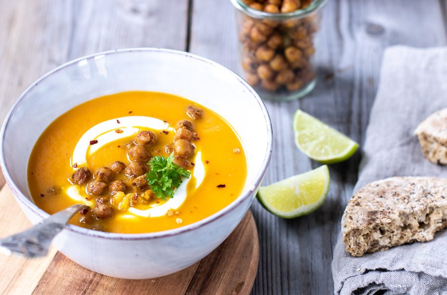

SNUP DIN KAFFEFLØDE
AND LET THE GAME BEGIN!
Gå op opdagelse i køkkenet...
Når vejret er gråt...

Varm kako med lakris
og hvid chokolade

Kanelsnegle med
cremet saltkaramel-drizzle

Gulerodssuppe, som
varmer hele hjertet
Til de morgenfriske...

Sydkoreanske Dalgona kaffe,
med et twist af karamel eller lakrids,
og hvid chokolade
Cremet smoothie med mango,
passionsfrugt og mynte

Pandekager med passion og mango sorbet
Aftensmad på 20 min...
Paprikagryde med oksekød

Fyldig spaghetti carbonára

Kylling i paprika flødesovs med spinat